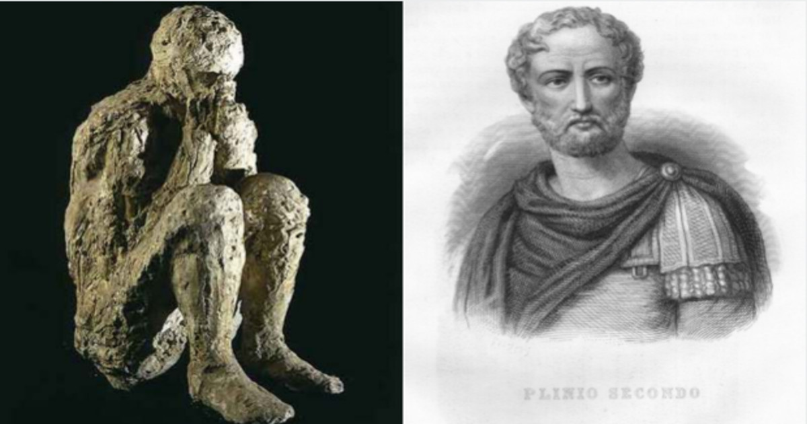
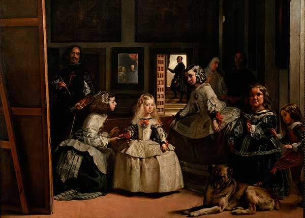
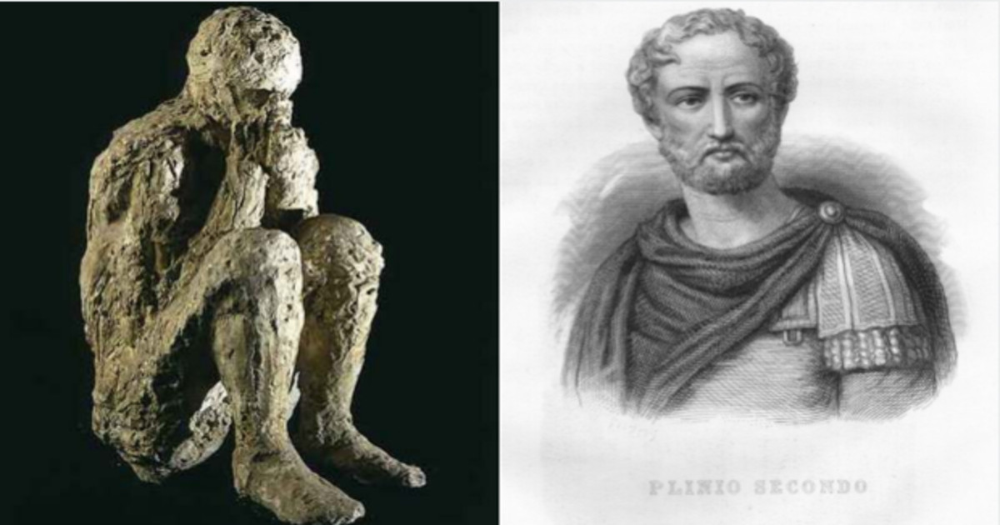
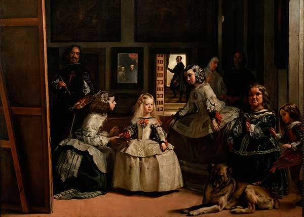

Imagenes sobre pelusas
Las siguientes imagenes son 100% reales, no son aptas para personas susceptibles y/o facilmente impresionable.
 




Videografía pelusil
Investigación sobre pelusas de la Universitat Pompeu Fabra:
Pelusa acechando a humano desprevenido
Roomba a.k.a. Letal Pelusa Killer en acción:
Audios y psicofonías capturadas
Rugido de pelusa silvestre en la Sierra de Gredos:
Las pelusas conspirando contra ti por la noche debajo de tu sofá:
La marcha de una pelusa dispuesta a matar: